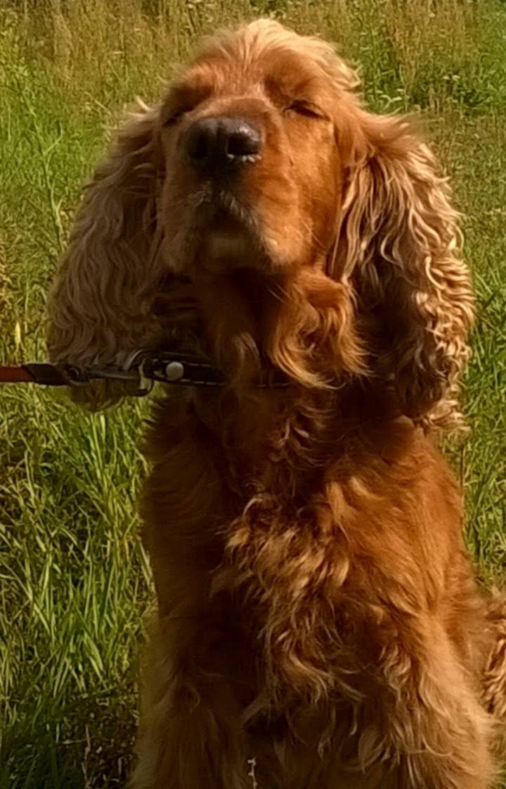

Spaniel
Spaniel to pies o myśliwskim pochodzeniu, obecnie najczęściej wykorzystywany jako towarzysz rodziny. Pokryty długą sierścią, o pięknych dużych oczach i zwisających uszach. Bystry, ruchliwy, aktywny.
Historia
Od stuleci niewielkie psy o pofalowanej sierści towarzyszyły sokolnikom. Podczas polowania miały znaleźć ptaki i wystawić je tak, aby myśliwy mógł się do nich zbliżyć i zarzucić na nie sieć. Już w starożytnej Kartaginie (IV w. p.n.e.) żyły czworonogi, które przypominały wyglądem dzisiejsze spaniele. Ksenofont – grecki historyk i filozof, uczeń Sokratesa – opisywał psy z pofalowaną sierścią, które zastygały w bezruchu, gdy zwietrzyły ptaki. Do dziś zachowała się rzeźba z czasów Filipa II – ojca Aleksandra Wielkiego – przedstawiająca takiego zwierzaka.
Według niektórych badaczy spaniele mogą pochodzić z Hiszpanii. W VII i VIII w. n.e. występowały tam czworonogi z dłuższym włosem i zwisającymi uszami, które dotarły na Półwysep Iberyjski w okresie wypraw krzyżowych, a stamtąd trafiły do Francji i Anglii. Francuskie słowo „espanir” – używane w odniesieniu do spanieli – znaczy „przykucnąć” lub „kłaść się” i trafnie oddaje sposób pracy tych psów. Na wzmianki o czworonogach używanych do polowań z sokołami natrafiamy w dziele „Lex Bajuvariorum” powstałym na początku VIII w., a także w zbiorze praw z 948 r. ustanowionych przez walijskiego księcia Howella Dda. Pod koniec XVI w. spaniele zyskały dużą popularność na Wyspach Brytyjskich. Postanowiono podzielić je na psy używane do polowań w wodzie i do pracy na lądzie. Dodatkowo ze spanieli lądowych wydzielono większe czworonogi, które nazywano springer lub starter spanielami i wykorzystywano do polowań z sokołami, oraz mniejsze – zwane sitting spanielami (od nich prawdopodobnie pochodzi cocker spaniel), które używano do polowań z sieciami. Po wynalezieniu w XVII w. broni palnej zmieniła się nieco rola psów – wymagano od nich nie tylko wypłaszania ptactwa, ale również aportowania zestrzelonej zdobyczy.
Na przełomie XIX i XX w. wyodrębniło się wiele odmian spanieli, m.in. sussex spaniel czy clumber spaniel. Cocker spaniel angielski powstał dzięki selekcji i niewielkiej domieszce odmiany karłowatej. Nazwa rasy wywodzi się od angielskich słów woodcock (bekas, słonka) lub cock (kogut) i nawiązuje do rodzaju ptactwa, na które najczęściej polowały te zwierzaki. Współczesna historia tych psów rozpoczęła się w 1879 r. W wyniku połączenia psa Franka i suczki Betty urodził się czarny cocker Obo uważany za protoplastę rasy cocker spaniel angielski. Pies należał do Jamesa Farrowa, który od jego imienia nazwał później swoją hodowlę. Bardzo znanym cockerem był Ted Obo występujący prawie we wszystkich rodowodach cocker spanieli angielskich. Klub rasy powstał w 1902 r., opracowano też wtedy wzorzec, który z niewielkimi zmianami obowiązuje do dzisiaj. W 1946 r. rasę uznał American Kennel Club. W 1993 r. na kongresie cocker spaniela w Notthingham oficjalnie uznano maść sobolową.
Dane
- Pochodzenie: Wielka Brytania
- Długość życia: 12-14 lat
- Odporność na warunki atmosferyczne: duża
- Koszty utrzymania: od 250 zł miesięcznie
- Cena psa z rodowodem: ok. 4000 zł
Wady i zalety
Wady
- wymaga systematycznej pielęgnacji
- bywa uparty i samodzielny
- lubi szczekać
Zalety
- oddany właścicielowi
- łagodny i przyjacielski
- nadaje się dla starszych dzieci
- czujny i spostrzegawczy
- chętnie się uczy
- może uprawiać psie sporty
- tolerancyjny wobec psów i innych zwierząt domowych
- nadaje się do mieszkania w bloku
Galeria
